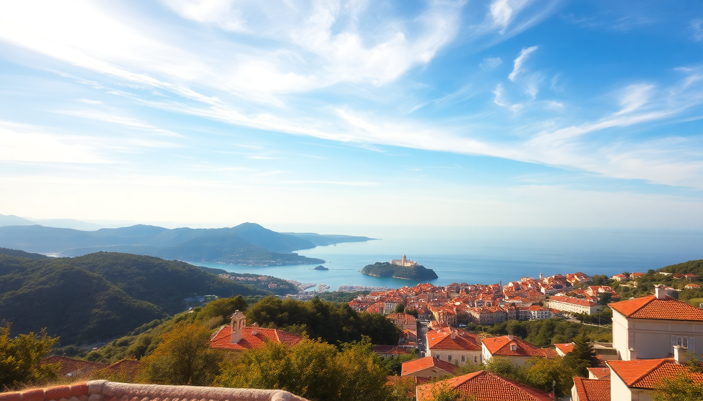

Best Day Trips from Dubrovnik: Mostar, Korčula & Elafiti Islands

I’ve done all three of these day trips from Dubrovnik—some multiple times—and each one serves a different mood. Mostar gives you a heavy dose of history and a different country. Korčula feels like a more relaxed, medieval Dubrovnik without the cruise crowds. The Elafiti Islands are pure escape: swim, eat grilled fish, and be back for dinner. Here’s what actually works and what doesn’t.
Is Mostar doable as a day trip from Dubrovnik?
Yes, but it’s a long day. The drive from Dubrovnik to Mostar is about 2.5 hours each way, plus time at the border crossing with Bosnia and Herzegovina. I’ve hit 45-minute waits at the border in peak summer, and I’ve breezed through in 10 minutes off-season. Plan for it.
Mostar itself is compact. The main draw is the Stari Most (Old Bridge), a 16th-century Ottoman arch that spans the Neretva River. I watched a guy dive off it for tips—touristy, but the locals have been doing it for generations. The old town on both sides of the bridge is a maze of cobblestone streets lined with shops selling copperware and cevapi.
- Stari Most – the bridge and the dive show (usually around noon and 3 PM)
- Kujundžiluk – the old bazaar street, good for souvenir shopping but haggle hard
- Koski Mehmed Pasha Mosque – pay the 10 KM entry to climb the minaret for the postcard view of the bridge
- Blagaj Tekke – a 15th-century Dervish monastery built into a cliff, 20 minutes from Mostar by taxi
- War Photo Exhibition – sobering but important, inside the Mepas Mall area
I ate at Hindin Han, a restaurant tucked under a stone archway right off the bridge. The lamb under the sač (bell) was tender and not overpriced—about 25 KM for a full plate. Skip the cevapi at the fast-food stands near the bridge; they’re fine but forgettable.
The catch: you lose half the day to driving. I’d only do this trip if you’re in Dubrovnik for 4+ days and want a change of scenery. If you’re short on time, pick Korčula or the Elafitis instead.
What’s the best way to spend a day in Korčula?
The ferry from Dubrovnik to Korčula takes about 2 hours 15 minutes on the Krilo catamaran. It leaves from the port in Gruž, not the Old Town harbor. I missed that my first time and had to jog with my backpack. Book tickets online the night before—same-day sells out in July and August.
Korčula town is a mini-Dubrovnik: walled, marble streets, and a cathedral. But it’s quieter. I walked the full circuit of the walls in 45 minutes and barely passed ten other people. The town claims to be the birthplace of Marco Polo. I’m skeptical, but the Marco Polo House makes for a quick photo stop.
- St. Mark’s Cathedral – 15th-century Gothic-Renaissance, climb the bell tower for 20 kuna
- Moreska Sword Dance – a traditional performance in the square, happens twice a week in summer (check the tourist board)
- Lumbarda – a 20-minute bus ride south; has the best sandy beach on the island, Vela Pržina
- Pupnatska Luka – a pebble cove with calm water, great for a swim if you rent a scooter (about 40 euros for the day)
- Massino Cocktail Bar – on the waterfront, does a solid negroni and has sunset seats
I had lunch at Konoba Mate, a family-run spot in the old town. The black risotto (crni rižot) was rich and inky, made with cuttlefish. Cost me 120 kuna. For wine, ask for Pošip—it’s a local white grape, crisp and dry, perfect with seafood.
The return ferry leaves around 5 PM. That gives you a solid 5-6 hours on the island. If you want more time, stay overnight. I’ve done it both ways, and the day trip works fine if you’re disciplined about the schedule.
Are the Elafiti Islands worth a day trip?
Absolutely. The Elafiti Islands (Koločep, Lopud, Šipan) are a 30- to 50-minute ferry ride from Dubrovnik’s Old Town harbor. The ferry costs about 50 kuna round trip and runs multiple times a day. No need to book ahead.
I’ve done this trip three times because it’s the closest you can get to a beach day without the chaos of the mainland coast. The islands are car-free (mostly), pine-scented, and dotted with old stone villas.
- Lopud – the most popular; has Šunj Beach, a sandy crescent on the south side (15-minute walk from the ferry dock). The water is shallow and warm. Bring water shoes—there are sea urchins near the rocks.
- Koločep – the smallest, with two villages (Gornje Čelo and Donje Čelo). I swam off the pier at Donje Čelo; it’s quiet and the water is glassy.
- Šipan – the largest but least developed. Rent a bike from Bike & Sea near the port (100 kuna for half a day) and cycle past olive groves and abandoned mansions. The Pakljena beach is a good stop for a dip.
- Restaurant Obala on Lopud – grilled squid and a cold beer, right on the water. Nothing fancy, but honest.
- Villa Ruža on Lopud – a small hotel with a terrace café; I had a slice of lemon tart there that I still think about.
The catch: Šunj Beach on Lopud gets crowded by noon in July. I arrived at 9:30 AM once and had the sand almost to myself. By 11, it was shoulder-to-shoulder. Go early.
When is the best time of year for these day trips?
May, June, and September are the sweet spots. The weather is warm enough to swim (sea temps hit 22°C by June), the ferries run full schedules, and the crowds are manageable. July and August are brutal for Mostar—I hit 38°C in the old town and couldn’t stay out for more than an hour. Korčula and the Elafitis are better with a sea breeze, but accommodation prices triple.
- May – quiet, cheaper ferries, but some restaurants on the Elafitis don’t open until June
- June – ideal; water is swimmable, crowds are thin, and the Moreska dance starts running
- September – still warm (sea at 24°C), fewer families, and the light is golden for photos
- October – possible for Korčula and the Elafitis, but Mostar can be rainy; ferry schedules thin out after mid-month
I’ve done the Elafiti trip in mid-September twice. The water was perfect, the beach was half-empty, and I didn’t need a reservation for lunch. That’s the move.
How do I get to the ferry terminals and the border crossing?
For Korčula and the Elafitis, you need Gruž Port, not the Old Town harbor. The Elafiti ferries (Jadrolinija) also leave from Gruž, but the catamaran to Korčula (Krilo) docks at the same port. From the Old Town, it’s a 25-minute walk along the waterfront or a 5-minute Uber ride for about 30 kuna.
For Mostar, you’ll cross the border at Neum (Bosnia’s only coastal strip). The border is known for slow processing in summer. I recommend carrying your passport (EU ID works too) and having a printed copy of your car rental papers if you’re driving. If you’re not renting a car, book a group tour—Dubrovnik Travel runs small van tours for about 50 euros per person. They handle the border paperwork and include a stop at Počitelj, a ruined Ottoman village on the way.
- Gruž Port – address: Obala Stjepana Radića 19; there’s a café with decent coffee and a bakery for pastries
- Neum border crossing – expect 20-40 minutes in peak season; no toilet facilities at the booth itself
- Parking in Mostar – use the paid lot near Hotel Mostar (10 KM for the day); the old town is a 5-minute walk
One tip: for the Elafiti ferry, buy a return ticket at the Jadrolinija office inside the port building. The machine outside sometimes malfunctions. I learned that the hard way and had to queue twice.
What should I pack for a day trip from Dubrovnik?
A small daypack is all you need. I’ve made the mistake of overpacking twice—once with a full camera bag for Mostar (the cobblestones wrecked my shoulders) and once with a towel for the Elafitis that was too bulky.
- Water shoes – essential for Šunj Beach and any pebble cove on Korčula
- Sunscreen and a hat – the sun in July is aggressive, especially on the open-deck ferries
- Cash in euros and Bosnian marks – Mostar runs on KM (convertible marks); Korčula and the Elafitis use euros. ATMs are available but charge fees (20-30 kuna per withdrawal).
- A refillable water bottle – tap water is safe in all three destinations; Mostar has public fountains near the bridge
- A light sweater or windbreaker – the Krilo catamaran to Korčula has air conditioning that’s often set to arctic levels
I also carry a power bank because Google Maps drains fast when you’re navigating old-town alleys. And a dry bag for the Elafitis—you’ll want it for your phone and wallet when you swim.
FAQ
Is it possible to visit both Mostar and Korčula in a single day? No. The logistics don’t work. Mostar is 2.5 hours inland, Korčula is a 2-hour ferry in the opposite direction. You’d spend 6+ hours in transit and see nothing. Pick one per day.
Do I need a visa for Bosnia and Herzegovina from Dubrovnik? Most nationalities (US, UK, EU, Canada, Australia) get visa-free entry for up to 90 days. But your passport must have at least 6 months of validity. The border guard at Neum checked mine closely once. If you’re a non-EU resident, check the latest rules before you go.
Which day trip is best for families with young kids? The Elafiti Islands. The ferry is short, the water is calm at Šunj Beach, and there’s no long driving. Mostar involves a border wait and uneven streets. Korčula’s ferry is longer and can get choppy—I’ve seen kids get seasick on the catamaran.
Conclusion
- Mostar is for history buffs who don’t mind a long driving day; go in shoulder season to avoid the heat and border queues.
- Korčula is the best all-rounder—medieval charm, good wine, and a sandy beach option in Lumbarda.
- Elafiti Islands are the closest escape; Lopud’s Šunj Beach is the standout, but arrive early to claim your spot.
- Book ferries the night before in summer. Carry cash in both euros and Bosnian marks. Pack light and bring water shoes.
- If you only have one free day, take the Elafiti ferry. It’s the least stressful and the most rewarding for a quick reset.